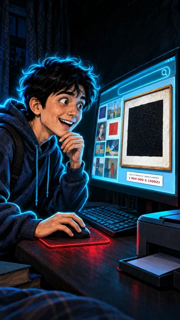

1-sahna — video, 9:16 (tik), 8 s

Nima bo'ladi
Diyor ekranga engashadi, ko'zlari kattalashadi, sichqonchani bosadi. Narx ko'rinadi
KameraSekin push-in: yondan monitorga yaqinlashib, kartina va narx yozuviga to'xtaydi
Vertical 9:16 video, 8 seconds, from the attached image. Slow push-in from beside Diyor toward the monitor, ending on the painting and the white price label under it. Diyor leans closer to the screen, his eyes widen more, his eyebrows rise, a fascinated smile grows; he clicks the mouse once and his chin hand drops to the desk. The screen glow flickers softly on his face, the red mousepad glows. Keep the white price label and the text on it exactly unchanged and sharp. Diyor's thin bright cyan-blue neon line runs exactly along his whole outer silhouette (hair, face, hoodie, arms, legs) with a soft blue glow; it moves with him in every frame and never disappears; nothing else in the frame has this outline. This is a silent film: Diyor does not speak, no dialogue, his mouth only shows the expression. Keep everything exactly as in the image for the whole clip: Diyor's round boyish young face, messy black hair, dark navy hoodie, jeans, sneakers and backpack, the setting and the colours. Colours: deep night darkness, electric cyan-blue neon and glowing red. No music. Negative: no new text, no extra letters or numbers besides the existing price label, no subtitles, no captions, no logos, no brand names, no watermarks, no extra people, no extra hands